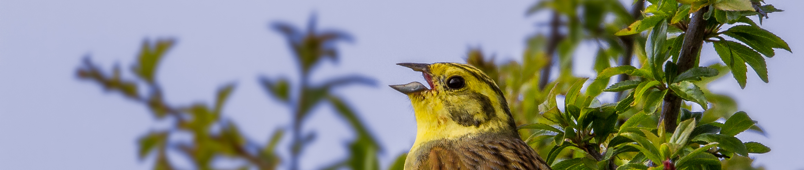

2026-11-10
Both females and males sing amazingly complex songs in many bird species. Explore examples from around the world and learn why female song matters.
Listen to female bird songs
Submit observations and recordings of singing females to major biodiversity collections and help researchers understand the evolution of bird song.
Participate nowSee how project contributions are documented and learn how to make yours discoverable.
Go to the contributions page